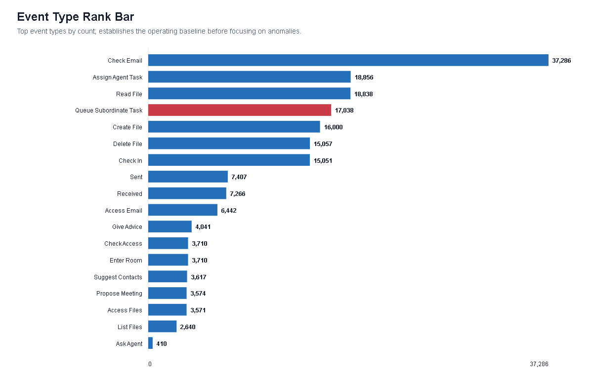
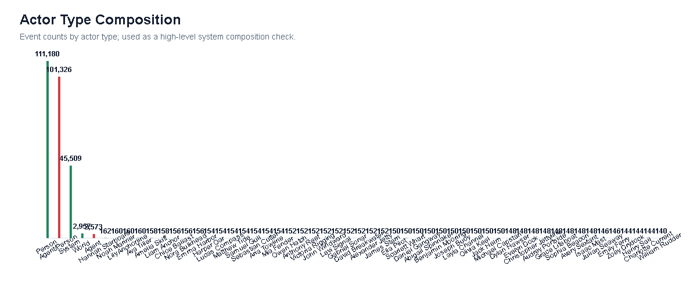
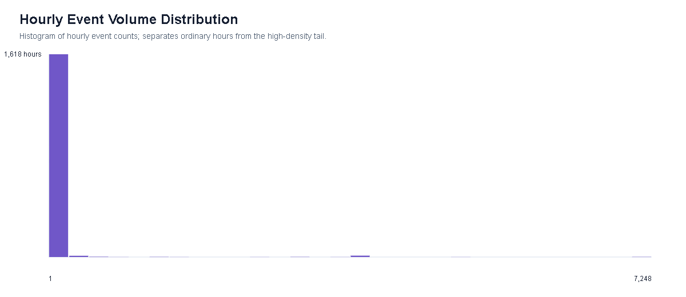
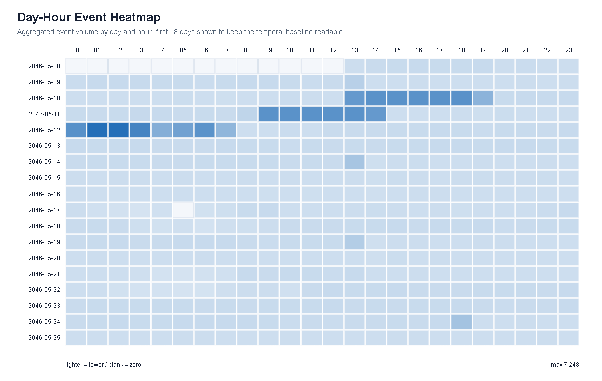
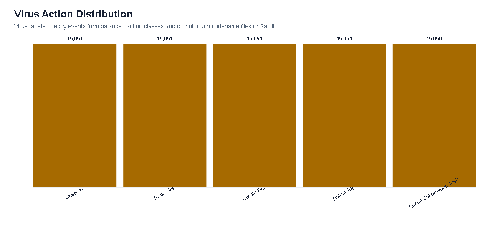

Answer Map
official questions mapped to evidence viewsData Layer Fusion
raw data sources -> derived evidence objects -> official answersThis view makes the analysis pipeline auditable. It separates original logs, file operations, Agent relays, organization context, public SaidIt records, and uncertainty labels before any final claim is made.
Statistical EDA Atlas
course-style descriptive charts before the narrative answersThis atlas uses standard descriptive visualization methods before any causal story is told. It gives the reviewer the same starting point as an exploratory data analysis notebook: event distribution, actor composition, temporal density, matrix structure, platform-field audit, and decoy-event baseline.






Baseline A: System Event Mix
bar chart sorted by event countThis view shows scale. SaidIt posting is a small part of the full system, so the anomaly must be judged against the normal operational background.
EDA Baseline: Actors and Rarity
party composition + anomaly denominatorsThis pair follows the exploratory-data-analysis habit of checking who appears in the data and how rare the target pattern is under different denominators.
Baseline B: Global Time Density
hourly activity, decoy window, and anomaly postsThis compressed temporal overview places the three file-source posts inside the full log window. Total activity is log-scaled so the virus burst is visible without flattening quieter periods.
EDA Baseline: Department Activity Matrix
department rows by event, relay, file, and codename signalsThe target chain crosses departments, so the overview first establishes where ordinary activity, file operations, and relays concentrate across the organization.
Process Comparison
directly-follows model for normal and anomalous postingA compact process-mining view contrasts the dominant human posting path with the repeated five-stage Agent path.
Baseline C: Date-Hour Activity Heatmap
calendar-style density matrixThis heatmap uses date rows and hour columns to expose daily rhythm, the virus burst, and sparse anomaly hours without drawing every event.
Baseline D: Event Stream Composition
stacked temporal compositionThe stacked stream separates background volume from relevant queues, codename activity, virus events, and SaidIt posts. It is aggregated by day to remain readable.
Baseline E: Signal Small Multiples
daily trends for task, virus, codename, and SaidIt signalsSmall multiples keep each signal on its own scale. This avoids hiding rare SaidIt events under the much larger virus and queue volumes.
Baseline F: SaidIt Signature
small multiples for actor, field, and post-check outcomeThe anomalous signature is visually separated from normal posting: Agent-initiated posts with content_source. The chart uses shared denominators and explicit counts to avoid misleading ratios.
EDA Baseline: SaidIt Field Audit
field presence matrix for normal vs anomalous postsThis matrix answers why content_source is a valid starting point: it is not selected in isolation, but after comparing the observed fields and adjacent behavior of all 108 SaidIt posts.
SaidIt Rule Space
all 108 posts separated by actor, source field, check, and cleanupEach mark is a SaidIt post. The three Agent file-source posts form a distinct rule signature rather than a subjective anomaly cluster.
EDA Baseline: File Operations
action and extension distributions for file evidenceBecause the anomalous posts are file-backed, this baseline shows how common file reads, creates, deletes, and file extensions are before focusing on codename payloads.
EDA Baseline: Incident Scale Comparison
small-multiple bars for the three file-source incidentsThis overview-level comparison links Q1 and Q3: the target SwiftWren event is the same mechanism as prior incidents, but much larger in relay scale and cross-department spread.
Baseline G: Relay Tasks and Actor Activity
task composition + named-party activityThese additional baselines use more of the provided data. They show that codename relays sit inside a much larger task system, and that John is not globally unusual by raw activity count.
Method Pipeline
how the dashboard supports analysisTools & Reproducibility
what was used to build and verify the visual analytics systemThe final rebuild is a self-contained browser-based visual analytics system. It does not require Tableau, Vega-Lite, or a D3 runtime for the submitted pages; older D3 prototypes remain only as development artifacts outside the canonical review path.
Interface
HTML, CSS, vanilla JavaScript, and custom SVG rendering for linked views, tooltips, filters, lightboxes, and URL-preserved interaction state.
Data Pipeline
Python rebuild/extract_data.py parses the official MC2 data.json and org_chart.json, then exports mc2_viz_data.json and .js.
Quality Checks
Playwright / playwright-core with Microsoft Edge is used for screenshots, interaction verification, layout checks, and figure lightbox testing.
Tools used for the official answer form: HTML/CSS/JavaScript, custom SVG, Python data extraction, PNG statistical figure generation, Playwright/Microsoft Edge verification, Git/GitHub Pages hosting.